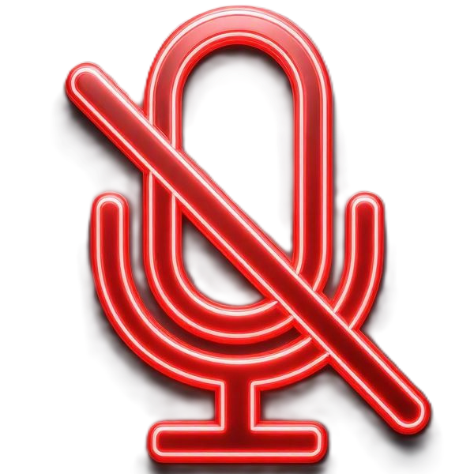
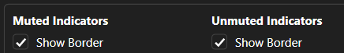
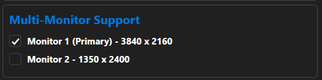
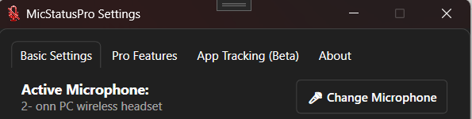
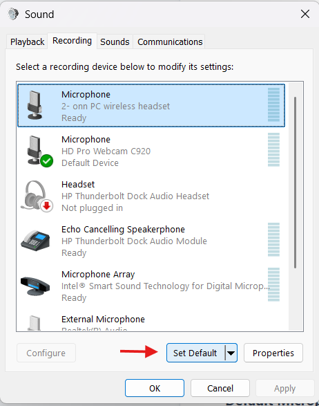
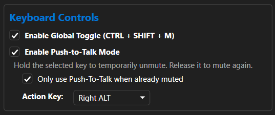

Troubleshooting Guide
This guide provides instructions for diagnosing and resolving common technical issues encountered while using MicStatusPro.
Border Not Showing
🔧 Quick Fix Checklist🔧
- Verify "Show Border" is enabled in Basic Settings
- Confirm the correct Active Microphone is selected
- Verify the border is assigned to the correct monitor
-
Check Basic Settings: Open the system tray menu and ensure "Show Border" is checked under the Muted and Unmuted Indicators.

- Check Active Microphone: Ensure MicStatusPro is monitoring the correct microphone. Open settings and check the "Active Microphone". If you need to switch microphones, click on Change Microphone to open the Windows Recording Device window.
-
Multi-Monitor Settings: If using multiple screens, check the Pro Features tab to ensure the border is set to display on the correct active monitor under Multi-Monitor Support.


Why Is My Screen Border Dashed?
MicStatusPro detected that Windows is using different microphones for general audio and communication apps. This is not an error, but some applications may use a different microphone than expected until the microphones match.
🔧 Quick Fix Checklist🔧
- Click Fix Microphone Settings
- Set desired microphone to default
- The dashed border will automatically return to a solid border.
What Causes This?
Windows can assign:
- Default Microphone for general audio and recording
- Communications Microphone for calling applications
When these point to different devices, some applications may use one microphone while others use another.
Example:
-
Default Microphone:
Realtek(R) Audio
-
Communication Microphone:
HD Pro Webcam C920
In this situation, Zoom may use one microphone while another application uses the other.
How Do I Fix It?
- Open MicStatusPro Settings
- Click the Fix Microphone Settings.
- Select the microphone you want to use.
- Click Set Default as shown below
- Click OK.

MicStatusPro will automatically detect the fix within half a second and restore your solid border.
Hotkeys Not Working
If your global toggle (CTRL + SHIFT + M) or Push-To-Talk keys are failing:
-
Feature Enabled: Verify the "Enable Global Toggle" or "Enable Push-To-Talk Mode" checkboxes are selected in the Premium Features tab.

- Key Conflicts: Another application may be overriding the shortcut. Try changing the hotkey to a different combination. Test the hotkey while MicStatusPro is in focus. If it works there but not elsewhere, another application may be intercepting the shortcut.
- Run as Administrator: Some full-screen games or elevated applications block keystrokes from background apps. Try running MicStatusPro as an Administrator.
Zoom Sync Issues
🔧 Quick Fix Checklist🔧
- Verify Zoom's Global Shortcut is enabled for Mute/Unmute My Audio (Alt+A).
- Verify Zoom Sync Mode is enabled in MicStatusPro.
- Review the Zoom Sync Modes guide for detailed instructions.
If MicStatusPro is not correctly syncing with Zoom's mute status:
- Enable Zoom Shortcuts: In Zoom Settings > Keyboard Shortcuts, ensure "Enable Global Shortcut" is checked for "Mute/Unmute My Audio".
- Language Settings: MicStatusPro relies on English interface elements for some advanced syncing. Check your Zoom language settings.
- Sync Mode: Review the Zoom Sync Modes guide to ensure you have the correct mode selected for your workflow.

How to Get Support
If issues persist after reviewing this guide, please reach out to our technical support team for further assistance.
Email: support@micstatuspro.com